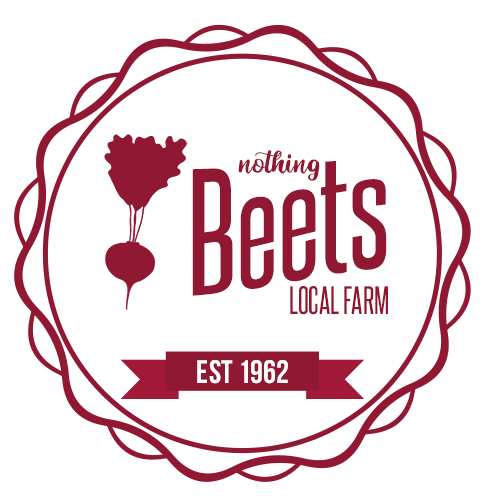

Howdy, I am Lou Ann, proud owner of
Nothing Beets Local Farm. Nothing
beets
waking up to your rooster, signaling the start of a satisfying day in the fields. If you are like
me, you were tired of logging into your social medias, wanting to catch up on your nephew's
happenings, only to be inundated with political posts, soapbox discussions, and pictures of people's
lunches.
I made this social community to step away from all of that, along with the help of
my nephew Billy (he's single and has a growing dairy farm, please call Nothing Beets
Local Farm for more information about Billy.)
Now quit being slow as molasses in winter and head on over to our Registration
Page. You'll soon find yourself hooting with the howls and soaring with the eagles.